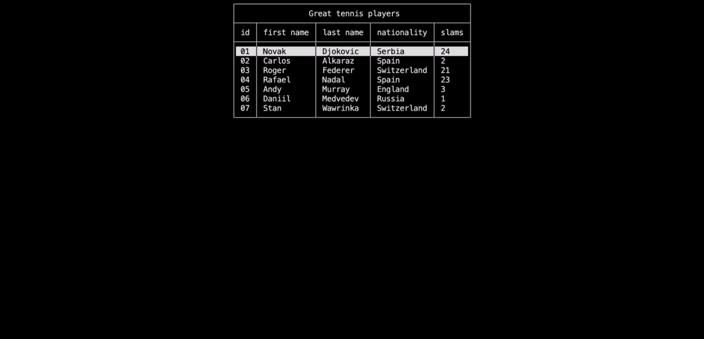

Data visualization
In this section, you will:
- Discover data visualization with
TableView,TableSelectorandMatrixelements
Tip
Each subsection is independent. I recommend you to overwrite the Program.cs file with the code of each section to avoid any confusion.
The TableView element
The TableView element is used to display data in a table format. It is useful when you want to display a list of items with multiple columns. Learn more
Let's create a TableView element and add it to the window.
Window.Open();
List<string> studentsHeaders = new List<string>() { "id", "name", "major", "grades" };
List<string> student1 = new List<string>() { "01", "Theo", "Technology", "97" };
List<string> student2 = new List<string>() { "02", "Paul", "Mathematics", "86" };
List<string> student3 = new List<string>() { "03", "Maxime", "Physics", "92" };
List<string> student4 = new List<string>() { "04", "Charles", "Computer Science", "100" };
List<List<string>> studentsData =
new List<List<string>>()
{
student1,
student2,
student3,
student4
};
TableView students =
new TableView(
"Students grades",
studentsHeaders,
studentsData
);
Window.AddElement(students);
Window.Render(students);
Window.Freeze();
Window.Close();

The TableSelector element
The TableSelector element is used to display data in a table format and allow the user to select a row. It is useful when you want to be able to interact with a table. You may use the Up and Down arrows or the Z and S keys to move int the selector. Learn more
Here is an example of how to use it:
Window.Open();
List<string> playersHeaders = new List<string>() { "id", "first name", "last name", "nationality", "slams" };
List<string> player1 = new List<string>() { "01", "Novak", "Djokovic", "Serbia", "24" };
List<string> player2 = new List<string>() { "02", "Carlos", "Alkaraz", "Spain", "2" };
List<string> player3 = new List<string>() { "03", "Roger", "Federer", "Switzerland", "21" };
List<string> player4 = new List<string>() { "04", "Rafael", "Nadal", "Spain", "23" };
List<string> player5 = new List<string>() { "05", "Andy", "Murray", "England", "3" };
List<string> player6 = new List<string>() { "06", "Daniil", "Medvedev", "Russia", "1" };
List<string> player7 = new List<string>() { "07", "Stan", "Wawrinka", "Switzerland", "2" };
List<List<string>> playersData =
new List<List<string>> ()
{
player1,
player2,
player3,
player4,
player5,
player6,
player7
};
TableSelector players =
new TableSelector(
"Great tennis players",
playersHeaders,
playersData
);
Window.AddElement(players);
// Contrary to the TableView, the TableSelector is interactive,
// so we do not have to stop the execution to see it, but to activate it
Window.ActivateElement(players);
Now let's collect the user interaction response by adding the following code:
var response = players.GetResponse();
Dialog playersEmbedResponse =
new Dialog(
new List<string>()
{
"Status: " + response!.Status,
"You selected the player "
+ playersData[response!.Value][2]
+ "!"
}
);
Window.AddElement(playersEmbedResponse);
Window.ActivateElement(playersEmbedResponse);
Window.Close();

The Matrix element
The Matrix element is used to display data in a matrix format. Learn more
Window.Open();
List<int?> firstRow = new List<int?>() { 1, null, 2, 7, 9, 3 };
List<int?> secondRow = new List<int?>() { 4, 5, 6, 8, null, 2 };
List<int?> thirdRow = new List<int?>() { 7, 8, null, 3, 4, 5 };
List<int?> fourthRow = new List<int?>() { null, 2, 3, 4, 5, 6 };
List<List<int?>> data =
new List<List<int?>>() {
firstRow,
secondRow,
thirdRow,
fourthRow
};
Matrix<int?> matrix = new Matrix<int?>(data);
Window.AddElement(matrix);
Window.Render(matrix);
Window.Freeze();
Window.Close();
Conclusion
In this tutorial, you learned how to use the TableView, TableSelector and Matrix elements. You are now ready to start the menus management tutorial.
Have a question, give a feedback or found a bug? Feel free to open an issue or start a discussion on the GitHub repository.